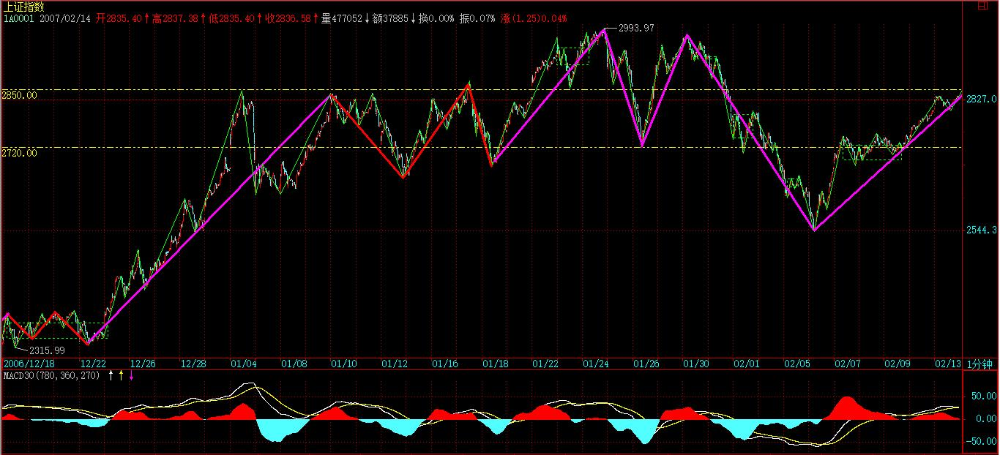
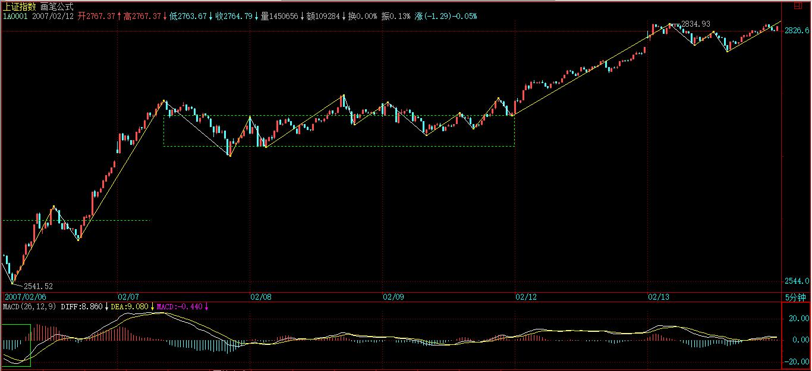
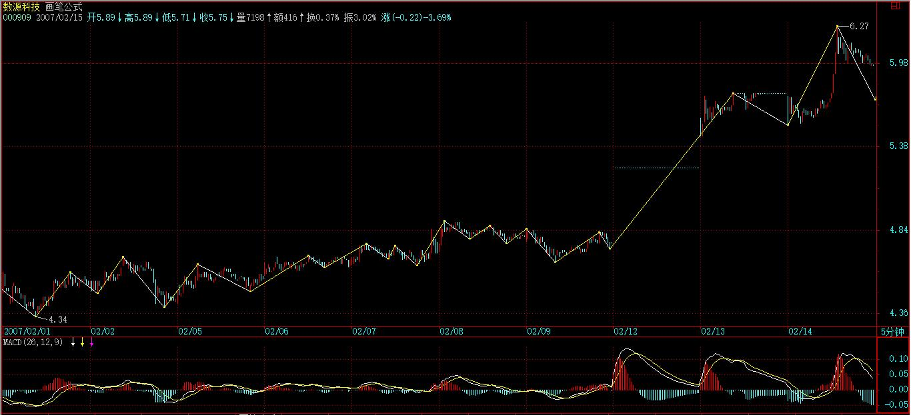

(2007-02-13 15:07:02)
市场价格是否完全反映所有信息，可以随意假定，无论何种假定，都和实际的交易关系不大。【韶山映山红】市场是市场，理论是理论。理论是用来分析市场的，不是拿来指导或者预测市场的。市场不受任何理论的支配。所以，市场价格是否完全反映所有信息，都无所谓了。】
交易中，你唯一需要明确的，就是无论市场价格是否完全反映信息，你都必须以市场的价格交易，而你的交易将构成市场的价格，对于交易来说，除了价格，一无所有（成交量可以看成是在一个最低的时间段内按该价格重复成交了成交数量个交易单位）。【韶山映山红】任何信息都可能是假的，只有能交易的价格是真的。】
这一切，和市场价格是否反映所有信息毫无关系，因为所有价格都是当下的，如果当下的信息没被市场反映，那他就是没被市场当下反映的信息，至于会不会被另一个时间的价格反映是另外的事情。【韶山映山红】价格反映信息，或者不反映信息，都是市场的选择。不是信息有没有用，是选择权在市场先生手里。】
站在纯交易的角度，价格只有当下，当下只有价格，除了价格与依据时间延伸出来的走势，市场的任何其他东西都是可以忽略不计的。【韶山映山红】“纯交易的角度”只谈技术，所以只需要关注“价格”和“依据时间延伸出来的走势”。】
价格也和人是否理智无关，无论你是否理智，都以价格交易，而交易也被价格，这是无论任何理论都必须接受的事实：交易，只反映为价格，以某种价格某个时间的交易，这就是交易的全部。
至于交易后面的任何因数，如果假定其中一种或几种决定了交易的价格，无论这种因数是基本面、心理面、技术面、政治面还是什么，都是典型的上帝式思维，都是无聊勾当。
其实，对于价格来说，时间并不需要特别指出，因为价格轨迹中的前后，就意味着时间的因数，也就是说，交易是可以按时间排序的，这就是交易另一个最大的特征：交易是有时间性的，而这时间，不可逆。
在物理还在探讨时间是否可逆时，对于交易空间的探讨，这最困难的时间问题，就已经有了最不可动摇的答案。
而本ID的理论，当然也是以这交易时间的不可逆为前提，如果今天的交易可以变成昨天的或者干脆不算了，那本ID的理论马上土崩瓦解。
交易，当然是有规律的，而且这规律是万古不变的，归纳上述就是：交易以时间的不可逆为前提完全等价地反映在价格轨迹上。【韶山映山红】实事求是。】
当然，这万古不变也有其可变之处，例如交易突然因为某种原因可以随便更改，因此，在逻辑上更严谨的说法就是，把满足该条规律的市场称为价格充分有效市场，本ID的理论，就是针对这种价格充分有效市场的，而这种市场，至少对应了目前世界上所有正式的交易市场。
那么，非价格充分有效市场是否存在？当然有。例如，你昨天一亿元钱买了一石头，今天卖石头的黑帮老大拿着枪顶着你说昨天的交易不算了，钱不给了，石头也收走了，这种存在类似交易的市场当然不可能是价格充分有效的。
以前所有市场理论的误区都在于去探讨决定价格的交易后面的因数，交易是人类的行为，没什么可探讨的，人类就像疯子一样，其行为即使可探讨，在交易层面也变得没什么可探讨的。所有企图解释交易动机、行为的理论都是没有交易价值的，不管人类的交易有什么理由，只要交易就产生价格，就有价格的轨迹，这就足够了。
站在纯交易的角度，唯一值得数学化探讨的就是这轨迹，其他的研究都是误区，对交易毫无意义。
那么，价格是随机的吗？
这又是一个上帝式的臆测。
决定论和随机论，其背后的基础都是一个永恒因数论，一个永恒模式论，也就是，价格行为被某种神秘的理论所永恒模式化。无论这种模式是决定还是随机，这种假设的荒谬性是一样。
交易，只来自现实，因此，价格是被现实的交易所决定的，相应，上面的顾虑就可以扩充为：交易是现实的行为，交易以时间的不可逆为前提完全等价地反映在价格轨迹上。
交易的现实性是交易唯一可以依赖的基础，那么交易的现实性反映了什么，有什么可能的现实推论？
首先，人的反应是需要时间的，就算是脑神经的传输，也是需要时间的；其次，社会结构的现实多层性以及个体的差异性决定了，任何的群体性交易都不具有同时性，也就是说，即使是相同原因造成的相同买卖，都不可能同时出现，必然有先后，也就是说，交易具有延异性，不会完全地趋同，这是交易能形成可分析走势的现实基础。
由于交易具有延异性，没有绝对的同一性，那么即使对于严格一种因数决定交易行为的系统，也依然能产生可分析的价格轨迹。任何群体性的交易行为，不会出现完全的价格同一性，也就是说，不会永远出现所有人同一时刻的同一交易。
而一个完全绝对趋同交易，就等价于一个赌博，所有的买卖和买大小没任何区别，这样的系统是否存在？当然，例如一个庄家百分百把所有股票都吃了，而且任何一笔的交易都只有他一个人参与，没有任何别的人参与，这时候，其走势等价于一个买大小的赌博。而只要有人买入或还持有这股票的1股，那么这个交易就可以用本ID的理论来描述，因为，一个不完全绝对趋同的交易就产生了，本ID理论的另一个界限就在此。
本ID的理论只有这两个界限，只要是价格充分有效市场里的非完全绝对趋同交易，那本ID的理论就永远绝对有效，这种绝对性就如同压缩影射不动点的唯一性对完备的距离空间一样。
至于有多少人学习，应用这个理论，对理论本身并没有任何实质的影响，因为，即使所有人都应用本ID的理论，由于社会结构以及个体差异，依然不会造成一个完全绝对趋同交易，这样，本ID的理论依然有效。
而更重要的是，本ID的理论，并不是一个僵化的操作，都是永远建立在当下之上的。例如，一个日线级别被判断进入背弛段，由于某种当下的绝对突发事件，例如突然有人无意按错键又给日本捎去一千几百颗原子弹，使得小级别产生突发性结构破裂最终影响到大级别的结构，这时候，整个的判断，就建立在一个新的走势基础上了，而往往这时，实际的交易并没有发生，除非你运气忒好，你刚按买入，那原子弹就飞起来了。
一般人，总习惯于一种目的性思维，往往忽视了走势是当下构成中的，【韶山映山红】什么是“目的性思维”？，就预设立场了。有了场，也就有了偏见。】而本ID的理论判断，同样是建筑在当下构成的判断中，这是本ID理论又一个关键的特征。关于这种理论的当下性，在以后的课程中会重点介绍，按学历，这是初中的课程。【韶山映山红】“理论的当下性”。这里是缠师唯一的一次明确“初中的课程”。】
而本ID的理论，最终比的是人本身，就像乾坤大挪移的第八重肯定打不过第九重的，但任何非乾坤大挪移的，肯定打不过第八重一样，【韶山映山红】乾坤大挪移。金庸《倚天屠龙记》张无忌修炼到第七层。】有一种武功是高出其它孤峰而上的，因为起点已经大大超越了，其他那些起点就错了，又怎么能比？【韶山映山红】缠论就像是独孤九剑，“高出其它孤峰而上”，“起点已经大大超越了”其他技术流派。】
显然，不可能所有人都相信应用本ID的理论，因此，那些不用本理论的人，就成了本ID理论吸血的对象，现实中，这种对象不是太少，而是太多了。【韶山映山红】大部分学习缠论的也同样并不相信，所以到处都是各种歪曲的修正主义。】
其次，如果有庄家、基金偷学了这种方法，这就等于乾坤大挪移比第几重了，而且对于大资金来说，至少要比散户高出两重，才可能和散户打个平手，因为资金大，没有更高的功力，怎么能挪移起来？【韶山映山红】自身体量大，行动不便，完成一个动作的难度更大。】更重要的是，级别越大，企图控制干扰所需要的能量越大，【韶山映山红】起作用的是能量，而不是力度。】对于周线级别以后，基本就没人能完全控制了，【韶山映山红】池子更大，控制更难。】如果真是出现个个庄家、基金争学本ID理论的情况，那么除了在小级别比功力外，【韶山映山红】大资金也有向小级别操作渗透的需要。】功力浅的完全可以把操作级别提高来加强安全性。【韶山映山红】大猪小猪博弈。】
更重要的是，应用相同的理论，在现实中也不会有相同的结果，现实就是一个典型的非完全绝对趋同系统，就像同样的核理论，并不会导致德国和美国同时造出原子弹，同样的理论，在不同的资金规模、资金管理水平，选股策略、基本面把握、交易者性格、气质等情况下，自然地呈现不同的面貌，这就保证了同一理论交易的非完全绝对趋同。
对本ID的理论有一点是必须明确的，就是本ID的理论是对价格充分有效市场非完全绝对趋同交易的一个完全的数学公理化理论，唯一需要监控的就是价格充分有效市场与非完全绝对趋同交易这两个前提是否还存在，更重要的是，这归根结底是一套关系人的理论，只能不断在交易中修炼，最后比的可是功力。
例如，就算是背驰这么简单的事情，就算是同一种方法，当成为群体性行为时，比的就是心态与功力，心态不好、出手早或出手迟的，就会在价格上留下痕迹，甚至当趋同性较强时，会使得级别的延伸不断出现，那就让功力深的人得到一个更好的买入或卖出价格，这些细微的差别积累下来，足以使得赢利水平天差地别。
这也是为什么本ID可以把理论公开的一个深层原因，因为本ID的理论是对价格充分有效市场非完全绝对趋同交易的一个客观理论，即使公开了，也不会让这理论有任何改变，就像牛顿力学不会让万有引力改变一样，美国的原子弹爆炸了不会影响中国的原子弹按照同样的理论出现一样。
至于理论可能造成的趋同交易加大，也早在本ID理论的计算中，【韶山映山红】“趋同交易加大”的表现都有哪些？可以做个专题。以后研究。】这里比的是当下的功力。【韶山映山红】“当下的功力”体现在小级别的把控能力上。】
无论你用什么交易方法，只要是在价格充分有效市场非完全绝对趋同交易里，你就在本ID理论的计算中；而要在本ID的理论里功力日增，就首先要成为一个顶天立地的人，这也是本ID让各位多看本ID所解释论语的原因。
交易，不过是人类行为的一种，要成为成功的交易者，首先要对人类的行为穷其源，得其智慧，否则，一个糊涂蛋，什么理论都是白搭。
本ID理论的基础部分，只是把现实的真相解剖出来，但这远远不够，看明白与行得通，那是两回事情。当然，看都看不明白，是不可能真的行得通的。而行，就是修行，“见、闻、学、行”，缺一不可。
本ID的理论如同大道，不需要私藏着，都可以学、都可以行，但能否行到不退转的位置，是否最终还是“学如不及，犹恐失之”，那就要靠每个人自身的修行了。
【韶山映山红】什么样算是“顶天立地的人”？１，“首先要对人类的行为穷其源，得其智慧”。２，“看明白”，还要“行得通”。行，就是修行，“见、闻、学、行”，缺一不可。３，脱离“学如不及，犹恐失之”的境况，行到不退转的位置。】
理论，只是把现实解剖，但真正的功力，都在当下，不光要用理论的眼睛看清楚现实，更要逐步让自己和走势合一。
而行的初步功力是什么？归根结底就是“恰好”，这个“恰好”是动态的，无论多少人，每个人的行为当成一个向量，所有人的行为最终构成走势的向量，而所谓的“恰好”，就是这个总向量本身。
而如何才能永远和这总向量一致？就要首先把自己变成一个零向量，有也只有当一个零向量加入到任何一个向量叠加系统里，才不会影响到最终的总向量的。
把自己的贪婪与恐惧去掉，让市场的走势如同自己的呼吸一般，看走势如同看自己的呼吸，慢慢就可以下单如有神了，你的交易，就是顺着市场的总向量的方向增加其力度而已，这才是真正的顺势而为。【韶山映山红】零向量的交易不是完全没有影响，也会顺着市场的总向量的方向增加其力度。不影响的只是走势的方向。】
只有这样，才算初步入门，才能逐步摆脱被走势所转的可悲境地，才能让自己和走势合一，和那永远变动的总向量一致而行。
至于走势分析的学习，只不过是门外的热身而已。【韶山映山红】总有人说缠论是否入门的问题。有没有什么判别标准？这里缠师给出了答案：走势分析的学习，只不过是门外的热身而已。把自己变成一个零向量，真正的顺势而为，才算初步入门。】
有人可能要追问，如果所有人都变成零向量，那又如何？
交易市场存在的基础，就是人的贪婪与恐惧，如果所有参与交易市场的人都没有贪婪与恐惧，那市场就没了，资本主义就没了，货币就被消灭了，那时候，本ID的理论自然就不存在了。
只有对这个以人的贪婪、恐惧为基础的市场进行“不相”之，才能长期有效地吸取这市场的血。
本ID理论的基础部分，在人类历史上第一次把交易市场建筑在严密的公理化体系上，就是要把市场的本来面目还原，让人的贪婪、恐惧无所遁形，只有明确地知道市场当下的行为，才可能逐步化解贪婪与恐惧，把交易行为建筑在一个坚实的现实基础上，而不是贪婪、恐惧所引发的臆测上。
只有智慧才可以战胜贪婪、恐惧，而当所有的贪婪与恐惧被战胜后，贪婪与恐惧所物化的资本主义社会本身，也就丧钟敲响了。
前两天我给大家算过一笔账
过去这五年多里，茅台涨幅与五粮液是一样多的；格力涨幅与美的是一样多的。
明白我的意思没？别总是把股价涨幅往“个别公司基本面有多独特”这个话题上扯……
“我们曾经以为自己都是风，到最后才知道，其实我们都是草”
都是草……草……
历史洪流中，个人努力有多大意义？不好说，不好说，但都可以归结为“命好，顺天顺势”
太把自己当回事，这就……
大盘在前面强调的2850压力下出现1分钟级别的背驰进入震荡，是最正常不过的事情，

毕竟汉奸已经受汉奸影响而心态不稳的依然占了多数，不经过一点拉锯来稳定人心，寻找战机，是不现实的。
还有三天，可以去努力让春节有一个满意的指数。
今天深交所继续发扬狗拿耗子的精神，确实让一些计划受到影响，今天的个股没什么可说的。
说句题外话，今天开始，有关创投的概念会逐步升温，这可是真正的朝阳产业。
2007-2-13 15:09
[匿名] 小鸟 2007-02-13 15:12:38
妹妹你好！
我觉得自己现在的操作基本上都是成功的，但有一点把握得不好，中枢完成后继续上涨的一段，大概会涨到什么幅度？虽然妹妹说过走得晚不如走得早，但我总是紧张过度，看着点苗头就跑了
请问是不是中枢的前后两段大致对称？就好像一只蝴蝶，中枢是身体，前后两段就像翅膀。
多谢！
===
第一个中枢后上扬的一段，如果不出现背驰段，那就会形成第二个中枢，如果这中枢的级别比第一个低，那这上涨就厉害了，所以不用急。【韶山映山红】下跌趋势背驰之后转折，新走势形成第一个中枢，如何判断是盘整走势还是趋势走势？可以看“第一个中枢后上扬的一段，如果不出现背驰段，那就会形成第二个中枢”。如果“第一个中枢后上扬的一段”的中枢在新走势形成的第一个中枢之上，就会形成强三买。★可以做个专题。以后研究。】
具体、详细的，以后会说到。
2007-2-13 15:14
[匿名] 小鸟 2007-02-13 15:12:38
妹妹你好！
我觉得自己现在的操作基本上都是成功的，但有一点把握得不好，中枢完成后继续上涨的一段，大概会涨到什么幅度？虽然妹妹说过走得晚不如走得早，但我总是紧张过度，看着点苗头就跑了
请问是不是中枢的前后两段大致对称？就好像一只蝴蝶，中枢是身体，前后两段就像翅膀。
多谢！
==
缠中说禅 2007-2-13 15:14
第一个中枢后上扬的一段，如果不出现背驰段，那就会形成第二个中枢，如果这中枢的级别比第一个低，那这上涨就厉害了，所以不用急。具体、详细的，以后会说到。
==
补充一句，换句话说，任何能第一、二、三类买点完美出现的，基本比较厉害。【韶山映山红】下跌趋势背驰之后新走势的第一个中枢才会有“第一、二、三类买点完美出现”。】
2007-2-13 15:17
[匿名] 无言 2007-02-13 15:16:22
缠姐,有关创投的概念能不能说得明白一点,不必说个股,说说是什么形式的.谢谢!
==
风险投资、创业投资、VC【韶山映山红】600635大众公用】
【韶山映山红】天使angel是种子期，风险投资VC是早期/成长期，私募股权投资PE是成熟期。】
2007-2-13 15:18
[匿名] 恒旧常新 2007-02-13 15:13:22
请问老师一个中枢的问题，一个头肩顶的中枢是从左肩开始还是从头部开始？
第二个问题：同向的1、2、3个中枢，中枢2与中枢1有重叠，中枢3与中枢2有重叠但不与中枢1重叠，这种情况的走势是否只是中枢1的扩搌？其中枢的区间就是中枢1的区间吗？
祝福老师新年快乐！！！健康美丽！ ！ ！
==
其实没必要考虑什么头肩顶。
中枢扩展有精确的数学定义，在一个中枢还延伸的时候，只有一个中枢，不存在中枢1、2的问题。【韶山映山红】缠师答非所问了。】
2007-2-13 15:23
[匿名] 小丸子 2007-02-13 15:21:37
开盘买入600607上实医药，【韶山映山红】600607上实医药，2010年2月3日被上海医药601607吸收合并。】缠妹妹，我是用30分钟的第三类买点进行操作的对不对，但是有个疑问：第三类买点怎么样才能买在最低点上？
我今天还买入了000581,【韶山映山红】000581威孚高科。】但是却买的不对，在30分钟线上，我以为它要脱离中枢向上，并拌有大的成交量，就进去了，可是它却又下来回到中枢里了，觉得自己对第三类买点把握不好，缠妹妹能不能讲讲
谢谢！
==
这 股票没问题的，但你没买在30分钟的买点上，而是买点出现后走势发展中。【韶山映山红】600607上实医药，2010年2月3日被上海医药601607吸收合并。】
第三类买点还是要按第一类买点的来操作，只是看次级别以下的走势。
000581这种骗线是很容易判别的，【韶山映山红】000581威孚高科。】
关键就是次级别的回抽不能又到中枢里，只要耐心等待次级别的发展就可以，不要次级别还没走出来就冲进去，这样就容易被骗。【韶山映山红】提问者不是根据三买进的，是追高进的。他也没有操作级别的概念，和上一个股票一样，这个三买点也早就过了。】
2007-2-13 15:27
[匿名] 并不完美 2007-02-13 15:22:13
缠姑娘,我看大盘五分钟K线突破关于前面的2834.93点的后很可能就会成为一个5分钟的背驰,有关系吗?

==
你不需要预测什么，关键是走出来是什么就是什么。
2007-2-13 15:29
[匿名] 一粒米 2007-02-13 15:31:33
老大好：
上周根据此理论买入的000688帐面已有13%的收益，【韶山映山红】000688朝华集团。2015-05-13变更为建新矿业。】
已让我更大的信心跟你一起走，你的一切，我能学的一定学，先形似，后再神似。炒股理论学了10时间，对第一、二、三买卖点的把握已有信心，对中枢的概念还是比较模糊，现在每天通过一分钟的走势去观察，去学。有一定的基础再向你请教，免得浪费你的宝贵时间。
你的理论，对我以前用的炒股作了全面的废止，现在从头再来，花上一年半载时间，争取早日幼儿园、小学、初中、高中、大学一级级毕业，将来在国家需要我们打资本市场战争时，我一定跟你一起为国家效力。
再次谢谢老大的无私精神！让我们有学习机会，受益终身。将来学成之后，我一样会像老大一样无私奉献。
==
会买还要会卖，而且要不断总结，这样才能逐步熟练掌握的。
2007-2-13 15:34
[匿名] 晕 2007-02-13 15:31:58
缠师我还有一个细微的问题：在最低级别上(比如1分钟)，三根重叠K线是否要求连续？此时好像和高级别的A/C段不一样，它们不存在中枢的方向问题，哪些是Z走势段呢？
==
当然是连续三根，一样有方向，例如从高位下来形成的，方向就是下上下，其实，一般不用看1分钟图当最低的，看分时图更清楚，【韶山映山红】分时图就是1分钟的收盘线图。】
2007-2-13 15:39
[匿名] 并不完美 2007-02-13 15:22:13
缠姑娘,我看大盘五分钟K线突破关于前面的2834.93点的后很可能就会成为一个5分钟的背驰,有关系吗?
==
缠中说禅 2007-02-13 15:29:18
你不需要预测什么，关键是走出来是什么就是什么。
=====================================
[匿名] 并不完美 2007-02-13 15:39:21
我的意思是,若是背驰,但按照走势终完美的原则,至少应该在2900以上,所以重点应该看那个时候,这种想法是否正确的?
==
这里和走势必完美无关了，目前的关键是否能形成第二个中枢的问题。
而且，2900以上没有必然的理论保证，只是如果第二中枢在2850附近形成，那当然能上2900。
问题是能否形成，这要走势本身说话，不需要预测。
2007-2-13 15:43
[匿名] 袖手旁观 2007-02-13 15:41:40
关于昨天的“学”与“思”，“思”的同一性侧重是确定无疑的，唯有所思对象的同一性，才保证“思”有所成。
本来就是钻个牛角尖扯一扯，没钻出什么缝来，缠mm的回复费心了。
==
也不是的，关键是最根源的同一性必须揭示出来，一般说的同一性，都不是根源性的。
2007-2-13 15:45
[匿名] 晕 2007-02-13 15:26:41
关于第三类买点有点疑问， 请缠师解惑：
-------------
由定理一，可以得到第三类买卖点定理：一个次级别走势类型向上离开缠中说禅走势中枢，然后以一个次级别走势类型回试，其低点不跌破ZG，则构成第三类买点；
-------------
这里为什么是以不跌破ZG作为判断，而不是以跌破GG作为判断呢？
按前面分类，此回试虽然没跌破ZG，但跌破GG，那新中枢还是原中枢级别的扩展，而不是上涨中新生一个，这个也一样能参与吗？
==
关键是中枢，而不是围绕中枢的瞬间波动。【韶山映山红】判断三买的依据是ZG，而不是GG。】
买点都是在跌的时候形成的，而不是回升以后再追高介入。如果第一买点没买，就等第二、三，就这么简单。
2007-2-13 15:57
[匿名] 晕 2007-02-13 15:56:19
多谢缠师解答，可还是有点不明白：
-----------------
当然是连续三根，一样有方向，例如从高位下来形成的，方向就是下上下，其实，一般不用看1分钟图当最低的，看分时图更清楚，
----------------
==
你个红绿没什么关系，因为红绿只反映收盘的情况，1分钟里怎么走没什么关系。如果价位是1分钟10元，下一分5元，然后又是7元，那是什么中枢都不会有，必须震荡稳定下来才有中枢。
2007-2-13 16:07
[匿名] 咕咚 2007-02-13 16:04:04
缠姐好~~今天有机会问问题了
------------
同样条件选取的股票,后期的走势强度却相差很大,有没有辨别的方法呢?
比如:缠姐说要关注农业后,我选取了3个股票,600540\600359\600506,首先排除了600540,其次排除了600506,于1月26日介入600359(3类买点),其后600506的走势竟然最强,在技术层面上有没有识别方法呢?
==
600506第三类买点在最高价外形成，一般情况下，当然比在最高价下形成的600359要快点，因为，至少节省了过最高点时的磨蹭。当然，这是一般性的结论，而不是绝对性的。【韶山映山红】判断三买的依据是ZG，而不是GG。但是三买在GG之上当然更好。】
【韶山映山红】600506香梨股份。】
【韶山映山红】600359新农开发。】
2007-2-13 16:11
[匿名] 后知后觉 2007-02-13 16:13:47
禅主，上次的晋西车轴买在了买点和卖点之间，幸亏你指导，我在5分钟高点出了。
今天下午14：20买了600001邯郸钢铁，请禅主指导！
（因为刷屏太快，我提问了四次了）
刚才没整理就把那些股票发上来了，对不起。不是要刷屏！
==
出了要找机会买回来，这股票中线问题不大的，卖了也无所谓了。600001中线也不错的。
关键是要明确操作的目的，如果是纯粹的练习，那么就选好一只股票反复操作，这样容易提高，而且慢慢培养感觉。
一般情况下，对于新手来说，选好一些基本面有支持的，股价离底部不元，大级别又出现买点的股票反复操作，这样的效率，比换来换去要高。
当然，熟练以后就是另一回事情了。
2007-2-13 16:27
缠mm什么时候有空在数理科技那一栏也加点料？
有一些基础的基础、根源的根源，有文字以来就被反复追问，始终得不到答案。比如说连续与离散、有限与无限、惯性与质量，等等等等。这些问题也许会被一直反复追问，但是我觉得纯哲学或者纯数学的探讨再深入也无法满足，就好比洛仑兹变换与狭义相对论的区别；就好比黎曼几何给了广义相对论数学工具，却不能自己给出一个现实世界的图景；就好比哥本哈根学派几近于实用主义的工匠，却无法给人以经典理论的华丽感受。似乎只能感叹人的理解力远远落后于数学体系自身的演化。
以上也是瞎扯，要出门办事了，先问个新年好吧。
==
有时间会的，新年好。
2007-2-13 16:29
[匿名] 悠悠悠哉 2007-02-13 16:09:45
如果市场上有人控制了个股的1/3的筹码 其它有筹码的人又不是活跃交易者，那么交易不是趋同性大大增加，那理论的适用性会不会下降那？
还有 这段如何理解啊？
“而更重要的是，本ID的理论，并不是一个僵化的操作，都是永远建立在当下之上的。例如，一个日线级别被判断进入背弛段，由于某种当下的绝对突发事件，例如突然有人无意按错键又给日本捎去一千几百颗原子弹，使得小级别产生突发性结构破裂最终影响到大级别的结构，这时候，整个的判断，就建立在一个新的走势基础上了，而往往这时，实际的交易并没有发生，除非你运气忒好，你刚按买入，那原子弹就飞起来了。一般人，总习惯于一种目的性思维，往往忽视了走势是当下构成中的，而本ID的理论判断，同样是建筑在当下构成的判断中，这是本ID理论又一个关键的特征。关于这种理论的当下性，在以后的课程中会重点介绍，按学历，这是初中的课程 ”
什么叫实际交易并没有发生？？？
==
你不是大级别一进入背驰段就操作的，而是要用区间套进行依次定位，这样，如果突然有意外发生，实际上你极大可能并没有进入操作，只是依然在观察走势的区间套演化中。
2007-2-13 16:37
[匿名] 小注 2007-02-13 16:31:49
禅姐好，大盘5分钟10:45是不是背弛，怎么没动作呢！【韶山映山红】笔误。10:15。】
==
那是1分钟的，其后就下来补缺口了，这就是反应了。
2007-2-13 16:38
对不起了，今晚有个饭局，要走了，
先下，再见。
2007-2-13 16:40
陈建民《小大乘修空及密乘大手印、大圆满、禅宗辨微》之辨微（中）
(2007-02-14 15:10:08)
二、分论、此中显密修空之分辨，小、大乘修空之分辨，大手印、大圆满之分辨，大圆满与禅宗之分辨，层层比较，高下、顿渐、半满，自然明剖彻见矣。
====
空，非修；修，即空。谁修谁空？
(一)显教修空与密教修空之分辨治学有两重功夫，皆不可少。首当会通，了知各各之同相、总相。譬如五事中，，皆以空性为唯一条件。小乘修空，其空性之性质，非不同于大乘；密乘中三种修空，亦非别有一空性之性质。故宗喀巴祖师竟敢言小大乘之差别在福，不在修空性。然彼只知会通，故次当明辨。经过博学、审问、慎思，然后有才能智力去明辨之；明辨有素，切知各别之异相、别相，乃能把握其特优之点，身体力行之，故终之以笃行。是故在笃行之光；必须过一番明辨功夫，才知自己之足跟，究竟能够点在何等田地，方不自欺，方不自夸，方不自馁。
==
有而空之，相也；空而有之，相也。空空，非空；有有，非有；相相，非相。以妄心劣识而求之，相缠相续，奢谈明辨，贻笑大方。
显教修空，是依戒、定、慧通常进程，可谓因乘修空；依八不、四句，如理推究之。故其为其期甚久，为力甚多，为效甚微。密乘修空，有灌顶及果位方便，故称果乘。由上师成就果位之功德，施以果位之灌顶，传以佛在果位证取空性时之最大经验、最近证量、最快方便，使弟子立地得见明体，而且趋大印。则空性不属理论而属证德，是以快捷。有如火箭、雷达、飞机，此其大别者一。显教修空，而同时在缘起上修六度)四摄，与空性配合；试试错错，不必丝丝入扣，针针见血。菩萨牺牲生命多历年劫，以能先度他人为主旨。密教修空，同时在缘起果位实德上，有各种手印、咒语、方法、观想。凡佛在证果时所有经验，皆在密乘中传授，因显教所未曾闻，所未曾见，所未曾行者，不一而足；故于缘起上，密教尤快于显教者万万倍。且显教所有特点，实已作为密教之基础。但有修显而不修密者，绝无修密而不先修显者，此其大别二。
===
非显非密、即显即密、法无定法、应机而发。显密，皆应机之施设，与此而妄分甲乙，以市易之识而妄论显密，可笑可怜。
(二)小乘修空与大乘修空之分辨
1．小乘修空重分析，大乘修空重当体。小乘因重分析，分至极微不可破，于是极微之执犹存。又有二语为小乘惯用者： “外境极微无方分，能持心亦刹那无分。”于是内外皆不可破。在时间上，则唯许过去、未来为空，而现前之时间为实有。大乘则一切法当体全空，三世皆不可得。其空性不待分析方空，其自性从本以来为空性。故曰： “一切有为法，本来即是空，亦名为假名，亦名为真实义”。不待分析，当体本空。小乘所举瓶碎则瓶空，心所执此瓶相亦空，此种分析之空，大乘不取。
===
当体非体，析空自空；大不离小，小岂外大？无一法可舍、无一法可求，舍小求大，自误误人。
2．小乘因配四谛之苦、集，而欲借空性之观，以逃避有苦；或配无明系统之十二因缘，而修逆行之灭谛，亦必借空性以灭之。此为一种消极空性之修法。故<俱舍论>及马鸣(小乘)所造<净法论)，所引佛圣教量修空各喻，如牛、婴、火等，皆有逃避之辞。如云：“某家见牛在途，误为已有，其后发现此牛实官家所放，非实我牛，急将牛放释，而自逃避，恐被官家擒去。”比喻我法本空，今执无我，必被人擒。此盖与苦果二谛配合，谓无明我执，实为苦本，故必除此我执，以免苦集。然大乘修空，重在空性同体，而配合无我利他，以发起同体大悲、无缘大悲。于是行六度，以三轮皆空；用四摄，而小我自灭，故有积极之修法。
==
菩提烦恼不二，我他不二、空有不二、大小不二、无明本明，不二不一。
3。小乘依业感缘起而配合空性，重在守戒。大乘用真如缘起，而出生如华严宗所提倡之缘起实德十种玄门，由是积集福慧资粮而圆满菩提；故所证者为大乘涅架，而非小乘罗汉四果可以比拟。按缘起与性空，一而二、二而一者，未有修性空而不修缘起者。亦未修缘起而不修空性者；惟其修空性有差别，是以修缘起亦有差别。
==
业感真如、非同非异，缘起非起、缘灭非灭，性空不空、性有不有，修而无修、证而无证，无修是证、无证是修。
(三)大中道修空与大手印修空之分辨大中道一名词，见诸贡师主译(祝拔宗大手印解析)文中，彼中云： “大中道为因，大手印为道，大圆满为果。”其所谓大，盖配合下二者而言，实则即指般若乘之中道也。然就此因、道、果三字，已有极强烈之比较观矣。显教属因乘，密教属果乘，已见显密修空之分析中，不必再赘。然以祝拔宗等大手印书，每每以显混密，故不得不详为指出。
=
中道非因，圆满非果，因果不空，不空真空。
1． 般若乘大中道依八不、四句、十八空、八喻等方法修习。由理推究，即境作观。大手印以显教修空作基础，进而取得如法灌顶，而依加持力得见明体；由此起修，故为果位修持，功德大异。
==
胡言般若，妄测果行，见明体是，是见非明。
2。般若乘必杂修四摄、六度，方与所发菩提心，令他先成佛，我后成佛主旨相合。金刚乘则重彻底出离，闭关专修，发“为度众生愿成佛”之心，务令克期证得，究竟利他。故不杂修治病、同事等染污因缘。具详(苏悉地经)，以九断修空，十分严格，故能取证。
==
时空幻有、病染本净，不离是离，不修是修。
3．般若乘依渐次次第，由戒生定，由定发慧，此属通途。及其修止，亦必先修止，后修观，最后止观双运。金刚乘之大手印，得见明体，方可起修。明体之中，止观本来双运，明即为观，体即为止；故在初修专一瑜伽时，已属止观双运矣。<祝拔宗大手印)以专一瑜伽为止，离戏瑜伽为观，实属大错。依拙见：专一者，谓专心住于大手印之明体上，此中并无能修之止，及所修之境。明体自生自住于其本体上，故为果位修空之法。离戏者，虽执着明体之戏论，而非离空性观察寻伺上之戏论。
===
戒定慧等、非三非一，观明不明、体止不止，不明体明、不体明体。
4．依止、观双运起修，则属直径式之进行，前后相续进行故。依明体起修之大手印，是圆周进行。每一瑜伽是一圆周。初依明体时，即具有法身见等流因，其后每一瑜伽，依次实现。初于空性法身之范围无可增加，特于空性法身之内有智力光明，逐渐增进，乃至成就真正法色二身无分之佛位。其明体之体，即法身；其明体之明，所起缘起智光，即色身。显教中道修空，修一分，证一分。故菩萨初地，不知二地境界。通常所谓断一分烦恼，证一分法身。故其因乘路远，不可与密宗金刚乘大手印道相比拟。如乘汽车，各站各地明显经历，此属显教；如乘喷气式飞机，则鸟瞰大地，一目了然，不劳各站仔细留恋观览也。
==
凿孔窥天，良可笑矣。以天为天，犹槐蚁见。离色身而求法身，缘木求鱼。法身烂砂盆，盖杀天下人。
5．又密教所采之喻与显教者“能喻”虽相同，如大手印一味瑜伽所引水波、水冰、睡梦等喻，虽亦见诸般若经中，然其“所喻”则大有别。 (祝拔宗大手印)及红教无垢光尊者之(虚幻休息法)未曾指明，致令黄教批评。拙书<大手印教授抉微)则已指明。其“所喻”者，在道即指空性而已，实为纯理的；而<祝拔宗大手印)之“所喻”，则指明体与妙用，实为证量的，而非惟纯理的。所谓水波者，水指明体，而波指一味之妙用。
=
无事非理、无理非事，体用非二、理事一如，痴人翳眼、波水相缠。
6．大手印之无修，指在光明空性缘起妙用上之无修垢。中道亦称无修，指在空性上之无修，指在断烦恼证菩提上之无学位。其证德必接近成佛之位，极难达到。大手印由灌顶力、加持力、法身果位实德之力，直接加持，其无修之位较易接近。无修之理论相同，无修之内容大异。若配三灌之空乐不二而进入无修，则果证大乐智慧身佛，根本为中道之显教所未曾闻，所未曾证。
==
无修犹修，修本无修，妄立果证，徒劳捏空。
7．般若乘修空性，配合三轮体空之四摄六度修，既将修时展缓，不依令他先我成佛之愿力无尽，更无意乐将成佛之期缩短。反之，金刚乘修空性，除免于上述之迟缓原因不计外，又有其他加速方便，为般若乘所绝无者。如大手印之四灌，有初灌、二灌之加速果位方便，不惟具足般若乘修空依心方便，亦且加上金刚乘果位依气方便。如专论解脱道，亦必经初二灌之各种方便乃直修大手印；如兼及贪道，则更有第三灌之阴阳二气之方便，加速之力更强。大手印虽属解脱道之一，然第四灌者，原本第三灌出生，则贪道亦非无大手印也。特诸大手印加行中，方可列入初、二、三灌等法，不可如各译本中，直以修气为大手印正行，此点拙著(大手印教授抉微)已详述矣。
==
偷心不死、妄论速缓，时犹生灭、缓速皆痴。
8．般若乘真如缘起，虽不如唯识宗之赖耶缘起，偏重在心，而真如之理虽不限于心，然而真如妙心等词，在在皆与心配合而言。窃尝解此种心字，但指真如之精华，非专为心灵之心，而自别于他物也。真如缘起，本指万法，非一指心法。色法心法，皆包括在内。是以在般若乘中观理论上，非别色法而专指心法，乃心法、色法兼具。余所谓“三界唯缘，万缘唯空”，以显然别于唯识家所谓“三界唯心，万法唯识”。然而在实修上，并无建立五大气修法。大手印虽属解脱道，亦未必修五大气法。然其阶次，在初灌、二灌，或经三灌，或不经三灌，总有修气之加行。全其哲理，明明属金刚乘而金刚乘则明明标举六大常瑜伽，亦称六大缘起。故大手印在正行中虽不修气，在加行中，早有修气之基础。加以大手印定力加被，开中脉，融五气，化五光，亦果上必有之事，非般若乘所可乐受也。
==
离妄求真、真犹真妄，离真求妄、妄犹妄真，翳眼痴汉，岂识唯识？因前果上，偷心作祟，空缘缘空、不废果因。
让大盘春节有一个好收盘的活动继续，明天，汉奸会大力反扑的，因此明天能否扛住，就是整个活动能否胜利的关键。
说过的股票，大多数都创新高了，联通按本ID与各位的约定，基本也快到5元了，不过这玩意真费钱，，【韶山映山红】600050中国联通。】
今天只好对某只股票狠下杀手，兑现点钱出来花花，否则差点扛不住。【韶山映山红】000999三九医药，2010.02.24变更为华润三九。】
今晚真想和里面长驻的老朋友好好谈谈心，别当山大王，暗地里还帮汉奸，都些什么烂人啊！【韶山映山红】600050中国联通。】
不说了，看明天吧，血战，快意恩仇！
2007-2-14 15:13
大家注意啦
对本ID曾说的股票，一定要技术来，当然中线都没问题，但由于本ID的操作是一个大的盘子里，有时候要用钱，砸起来估计不是一般人能受得了的，不追高，一定没事，追高就痛苦一下吧，中线没事的。
而且，最好就是用本ID的理论自己去找吃，这才是最恰当的。
2007-2-14 15:19
[匿名] 淡定 2007-02-14 15:16:44
看出楼主今天搏杀的壮烈了，性情中的楼主真是可爱啊，为你喝彩！
==
也没什么，这种事情经历太多了。本ID可没硬亢的习惯，打不赢就跑，找机会再来，这才是阻击的要点。【韶山映山红】《毛泽东选集·中国革命战争的战略问题》“打得赢就打，打不赢就走。”“天下也没有只承认打不承认走的军事家，不过不如我们走得这么厉害罢了。”
2007-2-14 15:22
[匿名] 你的样子 2007-02-14 15:21:31
老大好，情人节快乐，老大向来是言出必行。太牛了！
昨天的问题，也知道老大今天辛苦，别的同学能回答最好。
[匿名] 你的样子 2007-02-13 18:17:54
老大，有几个问题困惑很久了，关于中枢的，百思不得其解，翘首盼望老大能回答。
1 中枢的延伸，中枢的起始点是怎么划分的？取前三段就行了？这三段走势级别必须是同级别吗？为什么有时候看起来，后面两段比前面第一段明显短，像是第一段的次级别走势？
==
延伸有专门的定义的，前面都有，是一个数学公式。长短不是问题，而是中枢的级别。
2 中枢的扩张为高级别中枢后，高级别中枢的起始点是如何划分的？能否以上证为例，说明大盘自2541上涨以来，5分中枢扩张成30分中枢后，这个5分中枢是如何扩张成30分中枢的。5分中枢，30分中枢起始点在那个时间位置？
==
高级别的还是按定义来划分，例如，5分钟扩展成30分钟的，那第一个5分钟就是第一段了。【韶山映山红】“高级别的还是按定义来划分”，换一句话说，如果划分不出符合定义的中枢，就说明没有形成中枢。在划分中，第一个中枢是不变的，扩张的是后面的走势。】
3 公布的上证3个5分中枢的作业中，其中第二个5分中枢，构成第三类卖点，为什么？之前的30分中枢在哪？30分中枢zd在哪个时间点？
==
前面那一个大盘整就是，自己找去。
4 上证30分图，自2993点下跌到2541这明显的3段是否构成的是30分中枢？（其中第一段记得老大说是1分走势类型，为啥不是5分中枢呢？ ）
==
下跌的中枢是上下上方向的。【韶山映山红】这时候没有新高，不能视为整体的向上。而向下走势的中枢是上下上方向的回升中枢。】
5 第三类卖点回抽的必须是次级别走势型吗？次级别以下级别回抽不行吗？比如5分走势向上离开30分中枢，必须是以5分走势回抽确认吗？如果是1分走势回抽能不能构成第三类卖点？【韶山映山红】笔误。“5分走势向上离开30分中枢”的回抽，说的是买点。】
=
次级别以下，往往有骗线，不是绝对的。 【韶山映山红】更低级别的离开可以，更低级别的确认不行。】
2007-2-14 15:34
缠中说禅 2007-02-14 15:13:25
让大盘春节有一个好收盘的活动继续，明天，汉奸会大力反扑的，因此明天能否扛住，就是整个活动能否胜利的关键。说过的股票，大多数都创新高了，联通按本ID与各位的约定，基本也快到5元了，不过这玩意真费钱，，今天只好对某只股票狠下杀手，兑现点钱出来花花，否则差点扛不住。今晚真想和里面长驻的老朋友好好谈谈心，别当山大王，暗地里还帮汉奸，都些什么烂人啊！
不说了，看明天吧，血战，快意恩仇！
--------------
[匿名] 赚到了 2007-02-14 15:29:33
缠MM，看样子你大米用完了，明天血战，你用什么扛啊
--------------
[匿名] 职业轿夫 2007-02-14 15:31:17
大家有钱的捧个钱场，没钱的捧个人场吧！
今天的场面真是壮观啊！！
明天我也砸进去5000块！！！！不信顶不死他！！！
==
散户别凑热闹了，本ID还有10来只股票可以兑现的，你看416，今天还涨停，还怕没钱，【韶山映山红】000416健特生物，生产脑白金。2008-01-06变更为华馨实业，2008-12-30变更为民生投资，2014-04-14变更为民生控股。】
只是本ID阻击的资金在一只股票里不能占太大比例，如此而已。
2007-2-14 15:36
[匿名] 青青子衿 2007-02-14 15:37:01
联通里住有大BOSS,看来缠妹妹需要助拳啊!
==
里面的人是老熟人，他们的底细，本ID简直太清楚了，挑逗一下而已，没事的，本ID可不需要什么助拳。
2007-2-14 15:42
[匿名] 老虎 2007-02-14 15:38:49
今天收获不错用缠妹的理论在12号买了0755 效果不错基本面选股 缠妹理论做战术指导 只有两个字 无敌！！！ 缠妹授人以渔真乃大慈大悲 善哉！【韶山映山红】000755山西三维。】
==
自己找吃，不断提高，这才是正路
2007-2-14 15:43
[匿名] 禅迷 2007-02-14 15:40:10
禅姐好，各位师兄好：
000909这两天成交量巨大，【韶山映山红】000909数源科技。】
看5分钟线是否已经背驰，还可以追吗？

==
追，会有买点吗？
先养成好习惯，投资是一生的游戏，不能一开始就给消灭了。
2007-2-14 15:45
[匿名] 阿甘 2007-02-14 15:27:53
老大,你砸起999来,连1分钟的中枢都不留的,够狠,我喜欢.【韶山映山红】000999三九医药，2010.02.24变更为华润三九。】祝你情人节快乐.明天050就算汉奸怎么砸我也不出来了.【韶山映山红】600050中国联通。】
==
千万不用给本ID面子，一切按技术来。
2007-2-14 15:49
[匿名] tw888 2007-02-14 15:46:10
请问为什么不抛416,【韶山映山红】000416健特生物，生产脑白金。2008-01-06变更为华馨实业，2008-12-30变更为民生投资，2014-04-14变更为民生控股。】
而抛999?【韶山映山红】000999三九医药，2010.02.24变更为华润三九。】杀跌可不好!
==
416一拉起来就出，不就回去了，现在，明天万一紧急，抛起来也简单。
999今天本来就需要调整，本ID只是把这次在10元下买的兑现了，成本还在0下面，而且本ID不喜欢拿着太多去停牌，这是一个大的资金管理问题了。
其实各位看本ID这十几个股票构成的盘子每天的运动，就会学到资金管理了，现在本ID的大多数都在高位，只要有资金压力，兑现都很简单，本ID保证的是整个大组合的安全，而不是单个个股。【韶山映山红】以后再梳理、分析这些组合拳的打法。★★★★★可以做个专题。以后研究。】
所以，对于小资金来说，全跟本ID的股票并不是效率最高的，应该按本ID的理论去自己找吃。
2007-2-14 15:55
[匿名] 老虎 2007-02-14 15:38:49
今天收获不错用缠妹的理论在12号买了0755 效果不错基本面选股 缠妹理论做战术指导 只有两个字 无敌！！！ 缠妹授人以渔真乃大慈大悲 善哉！
----------
缠中说禅 2007-2-14 15:43
自己找吃，不断提高，这才是正路
-------------
[匿名] 老虎 2007-02-14 15:55:28
谢谢！不过看不出你在联通上有什么风险，我的专业就是通信这行。联通的分拆以及3G的前景不会有什么问题。还是那句话基本面选股 缠妹理论做指导 无敌！那缠妹就更不在话下了，大家替你担心就多于了。。。。
==
中线肯定没问题，只是本ID希望春节前攻击上5元，因为前几天公布阻击时已经承诺了，本ID担心的是这个，而不是中线。不过只是只有两天时间了，本ID不会硬来的。
2007-2-14 15:58
各位，对不起了，本ID今晚虽然没有烛光晚餐，却有一个大的聚会，只好先告辞了。
再见。
2007-2-14 16:00
本课目录
教你炒股票30：缠中说禅理论的绝对性陈建民《小大乘修空及密乘大手印、大圆满、禅宗辨微》之辨微（中）